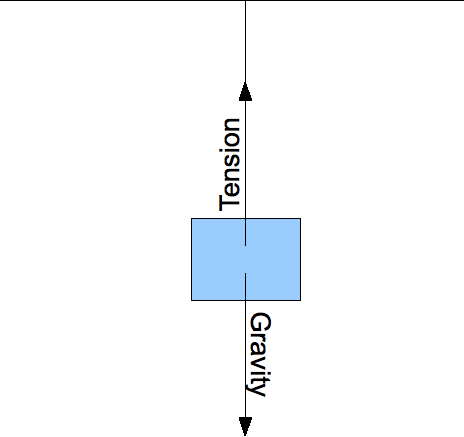

Guidance
Normal Force
Often, objects experience a force that pushes them into another object, but once the objects are in contact they do not any move closer together. For instance, when you stand on the surface of the earth you are obviously not accelerating toward its center. According to Newton's Laws, there must be a force opposing the earth's gravity acting on you, so that the net force on you is zero. The same also applies for your gravity acting on the earth. We call such a force the Normal Force. The normal force acts between any two surfaces in contact, balancing what ever force is pushing the objects together. It is actually electromagnetic in nature (like other contact forces), and arises due to the repulsion of atoms in the two objects. Here is an illustration of the Normal force on a block sitting on earth:

Tension
Another force that often opposes gravity is known as tension. This force is provided by wires and strings when they hold objects above the earth. Like the Normal Force, it is electromagnetic in nature and arises due to the intermolecular bonds in the wire or string:
If the object is in equilibrium, tension must be equal in magnitude and opposite in direction to gravity. This force transfers the gravity acting on the object to whatever the wire or string is attached to; in the end it is usually a Normal Force --- between the earth and whatever the wire is attached to --- that ends up balancing out the force of gravity on the object.
Friction
Friction is a force that opposes motion. Any two objects in contact have what is called a mutual coefficient of friction. To find the force of friction between them, we multiply the normal force by this coefficient. Like the forces above, it arises due to electromagnetic interactions of atoms in two objects. There are actually two coefficients of friction: static and kinetic. Static friction will oppose initial motion of two objects relative to each other. Once the objects are moving, however, kinetic friction will oppose their continuing motion. Kinetic friction is lower than static friction, so it is easier to keep an object in motion than to set it in motion.
Static friction opposes motion on surfaces in contact.
Kinetic fructions opposes motion of surfaces in contact.
There are some things about friction that are not very intuitive:
- The magnitude of the friction force does not depend on the surface areas in contact.
- The magnitude of kinetic friction does not depend on the relative velocity or acceleration of the two objects.
- Friction always points in the direction opposing motion. If the net force (not counting friction) on an object is lower than the maximum possible value of static friction, friction will be equal to the net force in magnitude and opposite in direction.